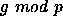
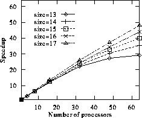
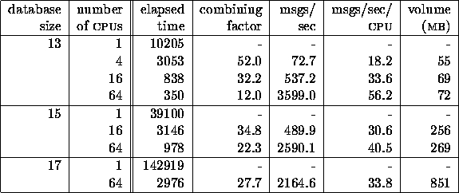

Our initial implementation performed poorly. We discovered that many processors often were idle, waiting for update messages from other processors. After monitoring the lengths of the input and output queues during the computation, we found that the program suffered from load imbalance. Each processor was busy during some iterations, but mostly idle during other iterations.
This load imbalance was caused by the distribution of entries among processors. This distribution used the Gödel coding scheme described above. Each processor was given the same number of entries, using a contiguous range of Gödel numbers. Due to the way the Gödel numbers were computed, the positions were not distributed randomly. For example, the first processor would get all positions with all stones in the 12th pit, but no positions with many stones in the low-numbered pits.
After we became aware of this problem, we made the distribution cyclic, by assigning position g to processor , where p is the number of processors. This assignment effectively randomizes the distribution. After this change, the load imbalance overhead decreased to a few percent, so each processor had the same amount of work to do during each iteration. The performance increased substantially. The time to compute the 17-stones database on 64 processors, for example, decreased from 4113 seconds to 2976 seconds.

Figure 3: Speedups for the Awari Retrograde Analysis program
on a collection of 64 SPARCs connected by an Ethernet.
The speedups with the new distribution scheme are shown in Figure 3, using up to 64 processors. We compute the speedup relative to the parallel Orca program on a single processor. Note, however, that our algorithm entirely avoids the buffering mechanism if run on one processor (see the if-statement in Figure 10), so it behaves exactly as a sequential algorithm in this case. The speedups increase with the size of the database. For a 13 stone database the speedup on 64 processors is 29.2. For 17 stones, the speedup is 48.
To analyze the performance of the program, we give some information about its behavior, using different database sizes and different numbers of processors (see Table 1). The first entry in the table gives the time (in seconds) to compute the database. (The time to write the database to disk after it has been computed is not included in our measurements, because Amoeba does not support parallel I/O.) The combining factor is the total number of update messages generated by the program divided by the total number of messages sent by the communication threads. This factor indicates how many logical messages are combined into one physical message. For the 17-stone database and 64 processors, for example, on average 1 message will be sent for every 27.7 updates. Each update requires 5 bytes (4 bytes for the Gödel code and 1 byte for the value).
Clearly, sending one message with about 139 bytes () over an Ethernet is far more efficient than sending 27.7 messages with 5 bytes of user data. In the Orca system we use, a remote invocation with little or no data takes 2.0 msec. Each additional byte of user data takes a few microseconds extra, so a 139 byte message is only slightly more expensive than a 5 byte message. Therefore, message combining greatly reduces the communication overhead.

Table 1: Performance characteristics.
The next three columns of the table give the total number of messages per second sent by all processors together, the average number of messages per second sent by each processor, and the total volume of the data (in megabytes) transferred over the network. All these numbers are for the messages generated by the communication thread for exchanging buffers. Our program also generates other kinds of messages (e.g., for termination detection), but these are sent far less often (typically a few times a second). The data volume is based only on user data and does not take protocol headers into account, so the amount of data actually transferred over the wire will be even higher.
As can be seen, the number of messages and the data volume increase with an increasing number of processors. With an increasing database size, the number of messages per second decreases, resulting in better speedups. The latter effect is due to the fact that message combining becomes more and more effective as the database size grows (see Table 1). For example, we have computed that the number of updates generated by the program increases almost as fast as the sequential computation time. Thus, the relative communication overhead without message combining would hardly decrease for increasing problem sizes. Therefore, the better speedups for large databases are due to the effectiveness of message combining.
Besides using message combining, we also reduce the communication overhead by overlapping computation and communication. We implemented this using separate worker and communication threads. The disadvantage of this scheme is the overhead in switching to and from the communication thread. On our system, each thread switch takes about 200 microseconds. Still, the latency for a message is much higher, so performance is gained by doing communication asynchronously with computation.